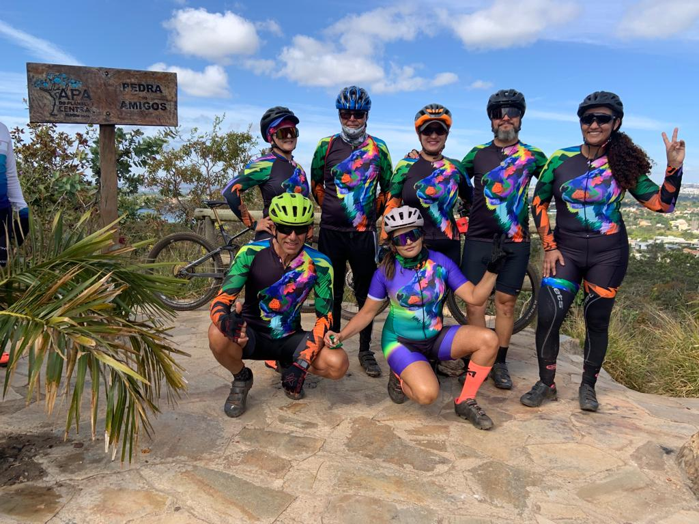
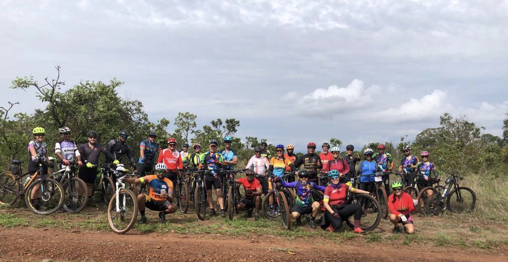
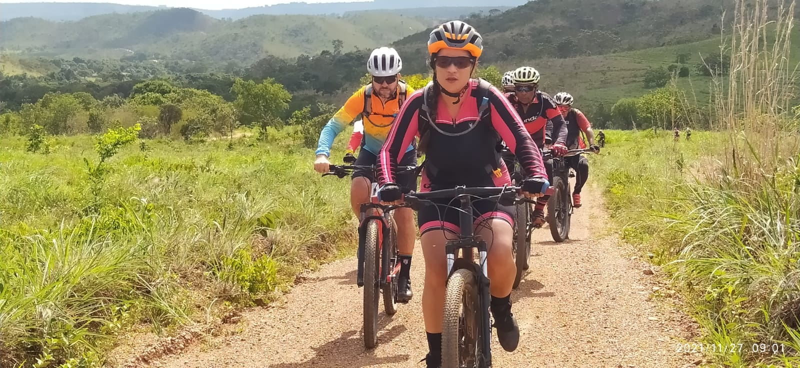
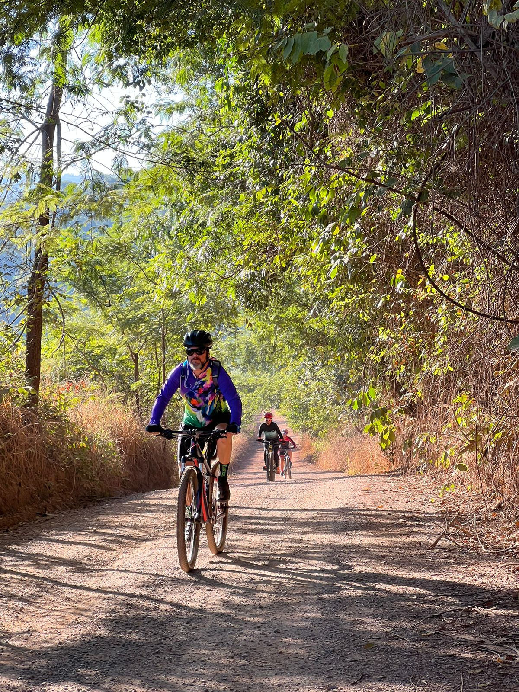

Bem-vindo ao nosso site dedicado aos apaixonados por Mountain Bike no Distrito Federal e região do entorno! Aqui você encontrará o ponto de encontro virtual para ciclistas de todas as habilidades e idades que desejam explorar as emocionantes trilhas que nossa área tem a oferecer. Junte-se a nossa vibrante comunidade de ciclismo e descubra os melhores grupos para pedalar, compartilhar experiências e aprimorar suas habilidades. Explore nossas trilhas cuidadosamente mapeadas, desde as desafiadoras montanhas até as exuberantes paisagens naturais. Esteja você procurando por adrenalina ou um passeio tranquilo em meio à natureza, temos algo para todos os ciclistas de MTB do DF. Venha pedalar conosco e vivenciar a emoção das trilhas únicas e da camaradagem que o ciclismo de montanha proporciona! 
No MTB Sobradinho DF, é possível estabelecer conexões com outros apaixonados pelo Mountain Bike e compartilhar valiosas informações sobre trilhas, grupos e eventos. Com esta plataforma, a criação de uma comunidade vibrante de ciclistas torna-se uma realidade ao seu alcance. 
O MTB Sobradinho DF torna mais simples a promoção das suas trilhas favoritas. Compartilhe informações, fotos e valiosas dicas para atrair um maior número de ciclistas para a bela região do Distrito Federal e suas proximidades.  
Criar o meu site, chamado MTB Sobradinho DF, foi uma das decisões mais acertadas que já tomei. Não só me permitiu estabelecer uma vibrante comunidade de entusiastas do ciclismo, mas também desempenhou um papel crucial na divulgação dos grupos com os quais me envolvo, com destaque especial para o Bikemia. Além disso, contribuiu significativamente para atrair um número maior de entusiastas para o esporte do momento, o Mountain Bike. Juntos, exploramos as emocionantes trilhas localizadas no Distrito Federal e na região circundante.” - HENRIQUE TALIBÃ